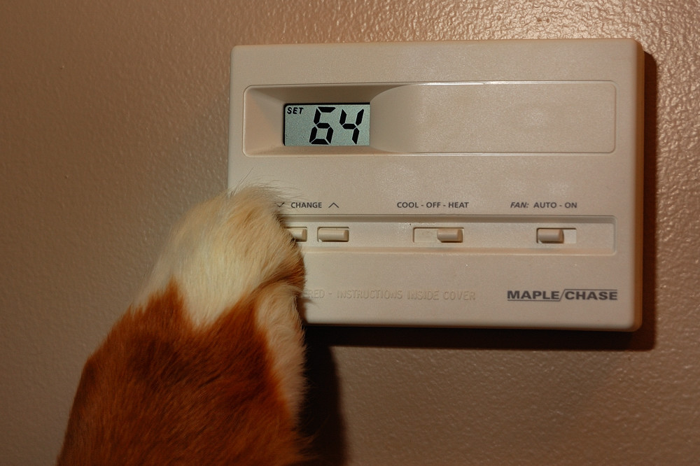

Quick setup task
If you don't have the Chrome browser installed, go to http://google.com/chrome and download and install it. Don't forget to open it to make sure it worked. ;) Just ask if you need help!
What is programming?
Humans giving instructions to machines.
Everyday things we "program"
- microwaves
- remote controls
- DVRs
- thermostats
Most programming builds on other programming
- low-level: moving mechanical parts
- platform: the machine and software the program runs on
- libraries: pre-written code to handle common tasks
- functions: abstractions within the program
- UI: how a user of the program triggers functions
Programming a thermostat
- During the day, I want it to be 70º
- At night, I want it to be 64º
- During the week, "night" ends at 6am
- On the weekend it ends at 10am

Programming anything
- What is the desired result?
- What actions need to be taken to achieve it?
- Are there special circumstances?
- If special circumstances arise, what different actions must be taken?
Programming the thermostat
- Temperature should never be less than 64º
- If it's after 6am, the temperature should be 70º
- Unless it's a weekend before 10am
- We interact with the UI
- We set configuration values
Programming the thermostat
if ( temperature < 64 ) {
raiseTemperature( 64 );
} else if ( temperature < 70 && time > 6 ) {
if ( weekend && time < 10 ) {
return;
} else {
raiseTemperature( 70 );
}
}
But we don't have to write all that!
var nightTemp = 64,
dayTemp = 70,
morning = 6,
weekendMorning = 10;
if ( temperature < nightTemp ) {
raiseTemperature( nightTemp );
} else if ( temperature < dayTemp && time > morning ) {
if ( weekend && time < weekendMorning ) {
return;
} else {
raiseTemperature( dayTemp );
}
}
If you can program a thermostat, you can program a computer.
The early days
- 100 BC: Antikythera Mechanism
- 1801: the Jaquard loom
- 1822: Charles Babbage invents the Difference Engine
- 1842: Ada Lovelace writes the first computer program
Mid-century programming
- 1946: ENIAC programmed by flipping switches
- 1952: Adm. Grace Hopper creates the first compiler
- 1957-9: FORTRAN, LISP, and COBOL created
- 1964: BASIC created at Dartmouth
- 1969: C created by Dennis Ritchie
Modern programming
- 1980: Smalltalk and Object-Oriented Programming
- 1983: C++
- 1986: Objective-C
- 1990: Haskell
- 1991: The World Wide Web; Python
- 1995: PHP; Ruby; JavaScript
- 1996: Java
- 2001: C#
- 2003: Scala
"It's just like planning a dinner. You have to plan ahead and schedule everything so it's ready when you need it. Programming requires patience and the ability to handle detail." - Dr. Grace Hopper
Platform
- hardware and software your program runs on
- programs must be compiled for a specific platform
- installable platforms like Java or .NET
- ex: operating systems, web browsers
Installed applications
- run on user's operating system or a runtime environment
- can access multiple parts of the user's system
- may work directly with devices (e.g., speakers)
- not changeable once installed
- can only be updated by installing a new version
Web servers
- run program accessible by clients at a location on the web
- can store a session, remembering an individual client for a short time period
- basic program finds web pages on the server and sends them to the client
- can incorporate other programs, also stored on the server
- programs can be changed on the server
- updates are available immediately* to clients
- web server programs are never meant to stop running
Databases
- can store text, numbers, or binary data
- relational databases create maps of relationships between data
- key value stores store simple data without maps
- different databases are used for different applications
- additional libraries allow programs to connect to databases, like a client does to a web server
- each database has its own language or API, e.g. Structured Query Language
Version control
- a place to back up successive versions of your work
- essential for teams of programmers
- may have the ability to merge multiple edits to the same code
- provides documentation of when certain things were changed
- can be used to deploy code to web servers
Compilation
- certain programs must be built
- building produces a binary or executable
- this file runs on the platform for which it was compiled
- compilation translates between the programming language and the language of the platform
- ex: desktop and mobile apps
Scripting and interpreted languages
- don't need to be compiled
- code is interpreted by the runtime when it's loaded
- additional commands can be given after loading
- ways of controlling an existing system
- ex: a web browser
Execution
- execution is starting a program
- program code becomes accessible
- program can listen for input
- programs that are started manually should provide a way to exit
Input and output
- input is what's provided by the user or other programs
- keystrokes, mouse clicks, voice, video, etc.
- output is what the program provides back
- text, data, files, etc.
- input and output can be piped from one program to another
Functions
- small units of stored code
- have their own inputs and outputs within the program
- executed by program, not by user directly
Operators
- logical, mathematical, and other micro-functions built into a programming language
- most common might be the assignment operator (often
=)
- operators can be words (e.g., new, void)
- operators can be shortcuts for statements (e.g., ternary operators)
Variables, literals, and constants
- values that can change during execution are variables
- variables store pieces of data that are in use
- literals are text, numbers, or other data written directly into the program
- literals may be stored in variables for reuse
- constants are shorthands that should not be changed
- constants can be changed by the programmer in one place
Data types
- different types of data are stored differently in memory
- some languages like to allocate memory for a variable when it's declared (strongly typed)
- common types are strings (text), characters (individual letters or punctuation), integers (whole numbers), and floating point numbers (decimals)
- high-level languages have complex types like arrays and objects
A place to write code
- most code is written in a text editor or an Integrated Development Environment
- an IDE contains a text editor
- we use Sublime Text 2
- when writing code on a server, you may need to use a text-only editor like Vim
Installing Sublime
- download the software from http://www.sublimetext.com/2
- save it to your Desktop
- double-click to run the installer
- open Sublime to make sure it worked
A place to try things out
- experienced programmers may write lots of code before trying it
- a good practice is to write tests for the code first
- if you're not sure something will work, or how to do it, you can try bits and pieces
- you can try out HTML, CSS, and JavaScript from a web browser
- you can try out other interpreted languages from a Read-Eval-Print Loop (REPL)
Testing some JavaScript
- open Chrome
- hit Cmd+Opt+J (Mac) or Ctrl+Shift+J (Win) to open the developer console
- type
var a = 10; and hit Enter
- type
a + 20 and hit Enter
- type
var n = "Your Name Here"; and hit Enter
- type
"Hi " + n and hit Enter
Testing Ruby and Python
- in your browser, go to repl.it
- click Ruby or Python in the "Practical" section
- wait for the REPL to load
- click the "eg" in the top right
- click the "Hello World" example
- (it will load in the REPL)
- hit Enter to see it work
Access the command line
- for Mac, double-click Terminal in the Applications directory
- for Windows, go to Run under the Windows menu and type
cmd
- in the future, you run your own REPL here
A place to store your work
- it's best to decide where you'll save your code before you start writing it
- code should be saved on the computer or server where it's written
- once written, code should be checked into version control
- free online version control includes Github, Bitbucket, and Source Forge
Creating a file
- in Finder (Mac) or Explorer (Win), create a new directory called GDI
- drag the folder to Sublime
- (the folder should appear in a panel on the left)
- right-click the folder and choose New File
- save the file as hello.js
- type
console.log("Hello!"); in the file
- save again
Putting it on Github
- go to github.com and create an account if you don't have one
- generate an SSH key, following the directions (work in teams and ask us if you get stuck!)
- (you'll need to use the command line)
- once you have an account, scroll to the bottom of the page
- click Github for Mac or Github for Windows
- download and install the software
- open the Github application
- under File, choose New Repository
- give your repo a name, choose the folder you created, and push to Github!
A place to get help
- every computer programming language has its own support channels
- find the official site for documentation
- if your language has an IRC channel, ask questions there
- we're always here to point you in the right direction if we can
{kind=link}